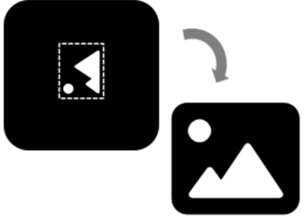

Presentación de imágenes de microscopÍa#
¿Qué es?#
Las imágenes de microscopÍa a menudo se muestran en artÍculos cientÍficos para ilustrar una conclusión particular. Si bien las conclusiones cualitativas no sustituyen a las comparaciones cuantitativas (consulte la siguiente sección), las imágenes ciertamente pueden guiar nuestro razonamiento y nuestras conclusiones. Seguir algunas buenas prácticas consistentes asegura que estas conclusiones sean correctas y sólidas.

Figura 9 Un breve resumen visual de los consejos de presentación de imágenes. Figura de Helena Jambor. Fuente#
Ajuste el recorte, la orientación y el tamaño de la imagen.
Para cualquier ajuste, trabaje con una copia de la imagen y no altere el archivo original. Nota, no utilice imágenes ajustadas para análisis cuantitativos de datos de imágenes. Los ajustes para comunicar de manera efectiva el contenido de la imagen pueden incluir la eliminación de regiones de imagen no informativas (recorte), el cambio de la orientación de la imagen y el ajuste del tamaño. Tenga en cuenta que la rotación y el cambio de tamaño pueden cambiar los datos de la imagen cuando se redistribuye la información de pÍxeles.

🤔 ¿Cómo lo hago?
Consulte la [hoja de trucos a continuación] (imagen-hoja de trucos) para obtener más información.
âš ï¸ Â¿Dónde pueden salir mal las cosas?
No se permiten ajustes que alteren las conclusiones.
📚🤷‍♀️ ¿Dónde puedo obtener más información?
Mejore la visibilidad del contenido de la imagen
Las imágenes a menudo no tienen valores de intensidad con espaciados regulares. Para mostrar los datos en una pantalla/en una figura, normalmente son necesarios ajustes de brillo y contraste.
🤔 ¿Cómo lo hago?
Consulte la [hoja de trucos a continuación] (imagen-hoja de trucos) para obtener más información.
âš ï¸ Â¿Dónde pueden salir mal las cosas?
Cualquier ajuste que resulte en la desaparición de los detalles de la imagen se considera engañoso 49. Tenga en cuenta que muchas transformaciones no lineales de brillo y contraste están disponibles en el software de procesamiento de imágenes; antes de usarlas, los usuarios deben asegurarse de que representan fielmente los datos para evitar engañar accidentalmente al público y deben reportar cualquier transformación/ajuste como anotaciones.
📚🤷‍♀️ ¿Dónde puedo obtener más información?
Usa colores accesibles
Las imágenes del microscopio de fluorescencia a menudo se componen de datos de múltiples longitudes de onda/canales de color. Para visualizar mejor las estructuras moleculares, los canales individuales se pueden mostrar en imágenes separadas en escala de grises. Cuando se eligen colores para representar la longitud de onda de la iluminación (azul, verde, rojo, rojo lejano), por ejemplo, la proteÍna verde fluorescente se muestra en color verde. Recuerde que los valores de intensidad sobre un fondo negro reducen el nivel de detalle.
Cuando los canales se superponen en imágenes «compuestas», los autores deben asegurarse de que las estructuras sean visibles, es decir, que la superposición no obstruya las caracterÍsticas y que los colores utilizados se distingan claramente.

🤔 ¿Cómo lo hago?
Consulte la [hoja de trucos a continuación] (imagen-hoja de trucos) para obtener más información.
âš ï¸ Â¿Dónde pueden salir mal las cosas?
Para las imágenes compuestas, considere si las combinaciones de colores son accesibles para las audiencias daltónicas (p. ej., no combine el rojo con el verde, sino el magenta y el verde; consulte la referencia a continuación para ver ejemplos) y, posiblemente, muestre canales individuales en escala de grises para maximizar la accesibilidad y los detalles. Las herramientas para la simulación de daltonismo de las imágenes existen en el software de procesamiento de imágenes (ImageJ/Fiji) y la visibilidad de los colores en las figuras de la imagen final se puede probar con aplicaciones como ColorOracle.
📚🤷‍♀️ ¿Dónde puedo obtener más información?
Anotar caracterÍsticas clave de la imagen
Cada imagen necesita una referencia a sus dimensiones fÍsicas. Esto generalmente se logra al incluir una barra de escala con dimensiones anotadas en la imagen o en la leyenda de la figura.
Además, los autores deben recordar anotar los colores utilizados, los sÍmbolos y flechas utilizados para guiar a los lectores y, si se utilizan, el origen de cualquier zoom/recuadro. Si se muestran imágenes especializadas (lapso de tiempo, volúmenes, reconstrucciones), se recomienda a los autores que consideren anotar información importante en las figuras.

🤔 ¿Cómo lo hago?
Consulte la [hoja de trucos a continuación] (imagen-hoja de trucos) para obtener más información.
âš ï¸ Â¿Dónde pueden salir mal las cosas?
La falta de detalles y la falta de explicaciones clave harán que sea imposible para el público interpretar los datos de las imágenes en cifras. Para hacer referencia sin ambigüedades a las sondas, considere usar términos del Diccionario de etiquetas de sonda ISAC, una nomenclatura estandarizada para sondas utilizadas en citometrÍa y microscopÍa.
📚🤷‍♀️ ¿Dónde puedo obtener más información?
Explique la imagen
Para orientar rápidamente a las audiencias, se debe presentar un texto explicativo mÍnimo junto con imágenes. Esto incluye la leyenda de la figura y la sección de métodos en artÍculos cientÍficos o el tÍtulo de las figuras en posters y diapositivas. Considere el uso de un vocabulario controlado para reducir la ambigüedad y aumentar la legibilidad de las máquinas de las descripciones de especÍmenes, tejidos, lÍneas celulares y proteÍnas, etc. Una herramienta útil es RRID (Reseach Resource Identifying Data)index, que proporciona Índices para reactivos y recursos biológicos de uso común, por ejemplo, plásmidos, lÍneas celulares y anticuerpos.
🤔 ¿Cómo lo hago?
Consulte la [hoja de trucos a continuación] (imagen-hoja de trucos) para obtener más información.
âš ï¸ Â¿Dónde pueden salir mal las cosas?
Las explicaciones faltantes de los detalles/métodos de la imagen pueden dar como resultado datos no reproducibles y limitar la comprensión de los datos.
📚🤷‍♀️ ¿Dónde puedo obtener más información?
📄 Estudio de replicación: la remodelación biomecánica del microambiente por la caveolina-1 estromal favorece la invasión tumoral y la metástasis 52
📄 Los métodos de imágenes están sub-reportados en la investigación biomédica 53
📄 ¿Son suficientes las leyendas de figuras? Evaluación de la contribución del texto asociado a la comprensión de figuras biomédicas. 54
¿Dónde puedo aprender más?#
Consulte Creación de figuras claras e informativas basadas en imágenes para publicaciones cientÍficas50 y Listas de verificación desarrolladas por la comunidad para publicación de imágenes y análisis de imágenes55 para obtener más sugerencias y mejores prácticas para crear figuras con imágenes.
Una hoja de trucos sobre cómo realizar la preparación básica de imágenes con software de código abierto:

Figura 10 Cómo realizar correctamente varias manipulaciones de imágenes en Fiji. Figura de Christopher Schmied y Helena Jambor. Fuente#